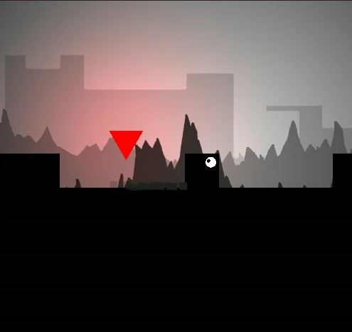
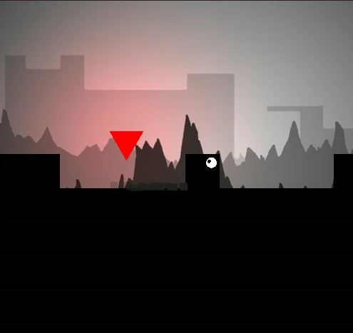

|
Hi, I'm Shane Warren Silveira — a passionate and aspiring Game Developer currently pursuing my Bachelor's degree in Computer Science and Game Development. While Unity is my primary tool, I also have hands-on experience with Unreal Engine, using both Blueprints and C++ to bring immersive ideas to life.
Beyond programming, I have a deep interest in game design. I’m currently interning at Kyodai Gameworks, where I’ve had the opportunity to work on system design, balancing, monetization models, and player metrics — helping me understand how games work not just technically, but as complete, enjoyable systems.
This very website was designed and developed entirely by me from scratch — a side project that sparked my curiosity in web technologies. While game development remains my primary focus, I’m actively learning web application development and looking to grow into full-stack development as well.
Here’s what I bring to the table:
- Gameplay programming & prototyping (Unity C#, Unreal C++)
- Game & level design with a focus on balancing and systems
- Monetization strategies and metric analysis
- Web dev skills: HTML, CSS, JavaScript
- A drive to learn, build, and collaborate creatively
Outside of development, I’m someone who loves anything with an engine. I’m an avid biker, always seeking the next adventure — whether it’s hitting the open road or exploring new places off the beaten path. That same sense of exploration and thrill drives my approach to creating games and experiences that resonate with people.
I’m excited to keep building, keep learning, and keep creating meaningful interactive experiences — both in games and on the web.
Let’s make something awesome together.
Gallery: Snapshots from My Projects


 
